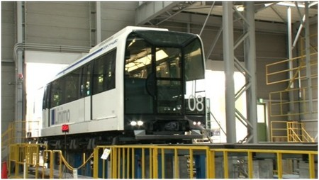
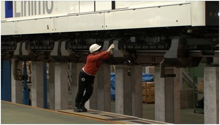
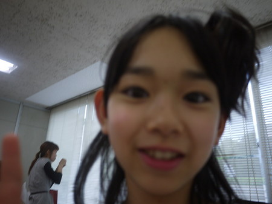
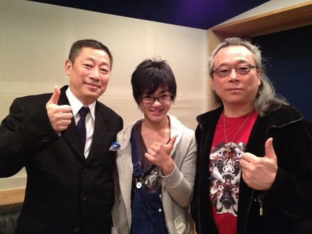
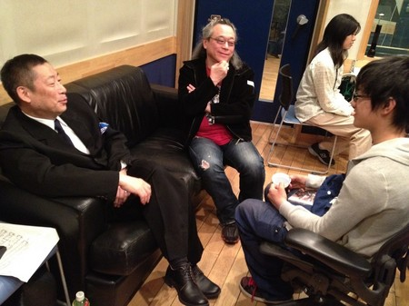
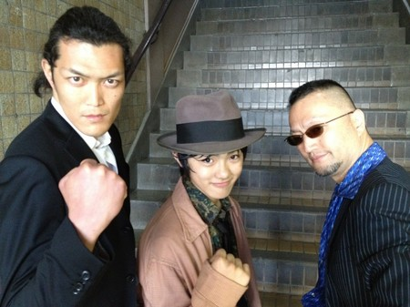
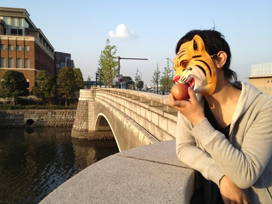

<<2012年4月 | トップページ | 2012年6月>>
2012年5月
【またもや降臨！】古坂大魔王
がはははは！
ワルワルψ(｀∇´)ψ！
…頑張って進めて、もう少しで最後のボスを倒せる…って時にゲームの電源を落としてやる！
…で、お馴染みの古坂大魔王だぁ！
俺は悪い！悪いんだぞ！
…ネコって可愛いよね。
コマオーって猫を飼ってるんだけど…
寝る時に必ず俺のお腹に沿ってうずくまって寝る。
目覚ましが鳴ると「ミャーマャー！」ってペロペロ舐めて起こしてくれる！
あー！可愛い！もう！可愛い！
動物を大事にしようね！可愛がろうね！可愛い…
(´・_・`)は？
がはははは！
お前んちの玄関の鍵をいつのまにか違う鍵に変えておいてやる！
がはははは！
ワルワルガオψ(｀∇´)ψ！
次に書くのは・・・
次は…トーコートーコー…
トウコだぁ！
こやつは可愛くもあり変でもあり妖怪トーコでもあり！
ヘンテコなブログ頼むぞ！
投稿者:古坂大魔王 | 投稿時間:18時00分 | カテゴリ：We are 大天才テレビジョン | 固定リンク


 " title="ソーシャルブックマークについて">
" title="ソーシャルブックマークについて">
※NHKサイトを離れます。
【乗りすけFile】 No.39 ホバークラフト
乗りすけFile No.39：ホバークラフト（５月３０日放送）
全長：3m60cm
全高：1m20cm
全幅：2m
重量：250kg
定員：2名
価格：約350万円
浮上することで陸上、水上、雪上を問わず進むことができるマシン。
機体後部のファンで発生させた風を機体内部に送り込み、エアクッションを膨らませる。機体の底面に空気を蓄え続けることで機体を浮上させるのだ。推進力もファンにより発生する。
最高速度は65km/h。乗り物としては航空機に分類されるが、日本の法律では水上を走行することから船舶とされ、水上走行時は船舶免許が必要である。
これまでの【乗りすけFile】はこちら
投稿者:大天才テレビジョン社員１号 | 投稿時間:18時43分 | カテゴリ：乗りすけさん | 固定リンク
" title="ソーシャルブックマークについて">
※NHKサイトを離れます。
【無題】鎮西寿々歌
ずーっと前に朱里と洋服屋さんに行きました！！！
その時に・・・。
「毛ガニとお酒」という看板を見つけたのだー。笑
みんなで大爆笑。
みなさんも面白い看板見つけたら教えてちょうちょ！
次に書くのは・・・
古坂さーん！！！☆
めっちゃ大好きです！！！
正直、全然悪くない・・・笑
札けりの撮影の時、帰りのロケバスで
いろいろお話するんです！！！
めっちゃ面白い話や
本当に深い話まで。笑
てきとうだけど・・・笑
めーっちゃ優しいひとだぜー★☆(´∀｀)//
大天才テレビジョン広報部からの業務連絡：寿々歌は古坂大魔王の写真を取り損ねたのでイラストです。
あと、記事それだけなのかい？？
投稿者:鎮西寿々歌 | 投稿時間:18時00分 | カテゴリ：We are 大天才テレビジョン | 固定リンク
" title="ソーシャルブックマークについて">
※NHKサイトを離れます。
てれび戦士がビジュアル系バンド「ChibiLug」を結成
5/28・29放送の「ヒット番組への道」にて、ビジュアル系バンドBugLugに、ビジュアル系の作法と精神を学んだ男子てれび戦士6人。ビジュアル系バンド「ChibiLug」を結成しました。なお、活動内容は未定です。そもそも今後活動するのかどうかもよくわかりません。
写真はChibiLugの6人とBugLugの5人、出川特命Ｐと鈴木アシスタントプロデューサーです。どの人物が誰か、目を皿のようにしてご覧ください。
投稿者:大天才テレビジョン音楽制作部 | 投稿時間:19時16分 | カテゴリ：お知らせ！ | 固定リンク
" title="ソーシャルブックマークについて">
※NHKサイトを離れます。
【大天才テレビショッピング】〜石ころの詰め合わせ〜
「大天才テレビショッピング」３回目の放送はご覧いただけたでしょうか。
今回ご紹介したのは、大天才テレビジョン商品開発部が総力を挙げて開発した「石ころの詰め合わせ」です。
詳細については、 「大天才テレビショッピング」のページ をご覧ください。
どうぞよろしくお願いいたします。
モデル：竹原司さん
投稿者:大天才テレビジョン社員１号 | 投稿時間:18時43分 | カテゴリ：大天才テレビショッピング | 固定リンク
" title="ソーシャルブックマークについて">
※NHKサイトを離れます。
【がんばりました！！】長谷川ニイナ
この前、「体育祭」がありました〜(*＾ｖ＾*)
私は足がおそいので、走る時は本当にきんちょうしました！！
あの時「ドク・ドク・・・」って心臓なってたなぁ〜。
それで、ドキドキの結果発表！
私の学校は、「赤」と「白」なので、2組の争いだったんですけど、
なんと結果は・・・
「同点」！！！すごくないですか！？
497点と497点。本当にびっくり！！！
あ〜楽しかったな♪ ドキドキ・ワクワクの体育祭でした！！
次に書くのは・・・
次に書くてれび戦士は、２つむすびの・・・スズカ！
スズカはとにかくおもしろい！メチャメチャノリが良いです！
さすが、関西人！！たまにスベる事もあるけど・・・。
あと、やさしい！
この前、みんなにおみやげもくれました〜。
本当にやさしいなぁ〜。
そんな、やさしくて、おもしろいスズカのブログ、お楽しみに〜☆
投稿者:長谷川ニイナ | 投稿時間:18時00分 | カテゴリ：We are 大天才テレビジョン | 固定リンク
" title="ソーシャルブックマークについて">
※NHKサイトを離れます。
【大魔王降臨！】古坂大魔王
がはははは！
ワルワル！
とうとうブログにも侵食してきたぜ！
え？誰かって(。-_-。)？
ちょっと待て！おいおい！俺だよ俺！
え？俺じゃわからない(。-_-。)？
ぐがー！ぐぎぎぎ！
古坂大魔王だってのさ！
くそー！こうなったら、
お前が寝ている間に膝に顔を油性ペンで描いてやる！
で、膝小僧って呼んでやるぞ！！
がははははψ(｀∇´)ψ！
今度からたまーーーに、ここにも出てやるからなぁ！！
せーの…ワルワルガオψ(｀∇´)ψ！
次に書くのは・・・
次はニイナ！長谷ニイだ！
きゃつは、笑顔の悪魔なのだ！
笑ってるけど本当はワルワルで一杯な女だ！いけ、長谷ニイ！
投稿者:古坂大魔王 | 投稿時間:18時00分 | カテゴリ：We are 大天才テレビジョン | 固定リンク
" title="ソーシャルブックマークについて">
※NHKサイトを離れます。
【最近のしゅみ】島田太一
最近、バドミントンにハマっています。
クラブもバドミントンに入りました。
公園でもやっています。
近所の女の子のお母さんともやりました。
バドミントン楽しいでーす。(´ω｀)ﾉ。ﾟ
次に書くのは・・・
次は古坂大魔王です。
ワルズのかんとくの大魔王です。
ワルワルって言ってるけど
やさしい所も・・・？
投稿者:島田太一 | 投稿時間:18時00分 | カテゴリ：We are 大天才テレビジョン | 固定リンク
" title="ソーシャルブックマークについて">
※NHKサイトを離れます。
【in ラスベガス】出川哲朗
今日の朝、ラスベガスから帰国
少し眠いけど、生放送頑張るぞ！
次に書くのは・・・
言わずと知れた笑いの神に愛される子供
投稿者:出川哲朗 | 投稿時間:18時00分 | カテゴリ：We are 大天才テレビジョン | 固定リンク
" title="ソーシャルブックマークについて">
※NHKサイトを離れます。
【乗りすけFile】 No.38 ATV
乗りすけFile No.38：ATV（５月２３日放送）
全長：1m84cm
全高：1m8cm
全幅：1m24cm
重量：約166Kg
定員：1名
価格：約62万円
「ATV」とは「All Terrain Vehicle」。日本語では「全地形対応車」である。
その名の通り、砂地、雪道、坂道、沼地など、どこでも走行可能なモータースポーツ用マシンだ。
極太の凸凹タイヤを装備、頑丈なバンパーで車体とドライバーを守る。トランスミッションは５段変速。最高速度120km/h。レース走行においては４輪ドリフトによるコーナリングやジャンプを駆使する。
免許不要のため、子供からシニアまで誰でも楽しむことができる。
これまでの【乗りすけFile】はこちら
投稿者:大天才テレビジョン社員１号 | 投稿時間:18時53分 | カテゴリ：乗りすけさん | 固定リンク
" title="ソーシャルブックマークについて">
※NHKサイトを離れます。
【てれび戦士の楽屋なう！】鈴木あきえ
こんにちは鈴木ＡＰです！
ただ今、てれび戦士の楽屋でこのブログを書いています！
横にはゆいがピタリとついていて、くすぐってきます！
さっきまでつかさがパンツ一丁で走りまわってました（笑）
そして、しゅんやがなめこに似てるという話題になり、
レオがだてメガネをしてオシャレに帰って行きました。
これからあと少し収録です！
そんな日常です (●＞∀＜●)
次に書くのは・・・
次に書くのはボス！！！
楽屋でのボスは、みんなにいじられすばらしいリアクションをひろうする日々…
そんな感じです。
先日、某ファミリーレストランの名前が言えなくて、「シャンデリゼ」といってました（笑）
ボス、よろしくー ●(*^▽^*)●
投稿者:鈴木あきえ | 投稿時間:18時00分 | カテゴリ：We are 大天才テレビジョン | 固定リンク
" title="ソーシャルブックマークについて">
※NHKサイトを離れます。
【事件です！！！】長谷川ニイナ
最近、私に事件が起こりました！それは、教科書がなくなったことです。
気づいたのは、前日。とつぜん、技術のうすい教科書がなくなってしまったのです。（オーマイガー！）
家の中を探して、探して、探しまくっても、ありませんでした。
次の日、願いをたくして引き出しを見ました。
すると…。
なかったのです。
じゃあ、ロッカーは？ありますように、ありますように！
残り、１ｍ。どうか…。ガチャ！な・い!！! どうしよう！授業が始まる５分前。
もう一度、ダメもとでえ、ロッカーを見ると…。な・ん・と。教科書があったのです!!!!
私は技術の教科書は厚さがうすいと思ってたんです！
でも、本当は、厚さがあってそれに気づかなかった私は、本当にバカだった・・・（涙）
改めて、反省するおっちょこちょこのニイナでした♪
「早口インザハウス」をする前にもきんちょうするけど、あ〜、授業前もきんちょうした〜。ホッ。
次に書くのは・・・
「次に書くてれび戦士は…」と言いたいところですが、なんと！
次は、てれび戦士ではなく、ＭＣの鈴木あきえさんでーす！
通称「アッキー」。

あ、あと「ゴリラ」！よく「ゴリラだっ！」って言われています！
とっても面白い方でいつもノリノリです！！
本当にテレビのままです！！
私にとって、いや、てれび戦士全員にとって「たよれる存在」だと思います！！！
さてっ！次のアッキーのブログ、お楽しみにーーー！！
投稿者:長谷川ニイナ | 投稿時間:18時00分 | カテゴリ：We are 大天才テレビジョン | 固定リンク
" title="ソーシャルブックマークについて">
※NHKサイトを離れます。
【面白い店の名前】ソーズビー航洋
この前、おはかまいりに行きました。
行きの車で「グランマ」っていう散髪屋さんがありました。
車の中は爆笑じょうたい。
他にも、ちがうおはかまいりに行ったら
「いるかのたまご」って駄菓子屋さんがあった。
これも爆笑でした！
次に書くのは・・・
次に書くのは、ニイナです！
世界一幸せな少女ニイナは、オーディションの時から仲がイインダヨ〜。
二人で、共通点を合わせたら（数えたら）14個もあったよ！
そんじゃーお楽しみに〜！
投稿者:ソーズビー航洋 | 投稿時間:18時00分 | カテゴリ：We are 大天才テレビジョン | 固定リンク
" title="ソーシャルブックマークについて">
※NHKサイトを離れます。
【空にお魚が！！】岡田結実
こないだ空をみてたら、くもの形が！食べられたお魚のほねの形してたの！
写メとった！すごくにてたんだよ！！
その近くとかにネコがいればいいのに ww
一生に一度しかみれないと思う！
キセキだーーーーーーーーーーーーーー！
※写真が見つからないそうなので絵で描いてもらいました
次に書くのは・・・
その人は、自分からみて、かわいくてイタズラ大好きで！あまえんぼう？！
とにかくかわいい それは…ソーズビー航洋（ずっさん）だよ！

ずっさんよろしく！
投稿者:岡田結実 | 投稿時間:18時00分 | カテゴリ：We are 大天才テレビジョン | 固定リンク
" title="ソーシャルブックマークについて">
※NHKサイトを離れます。
【先日の記事より...】竹原の写真リベンジ
先日、大天才テレビジョン広報部からの指摘を知ってか知らずか、
竹原が写真を撮り直してくれました。せっかくなので、ご紹介しましょう。

…竹原くん、こういう写真をピンぼけ写真というのだよ。
というわけでもう一枚…

おい！今度は真っ暗じゃねーか！！！！
君はドウブツカメラ！で何を学んだのかい？？
そしてリベンジは続き３枚目…
今度はよく出来ました。
それにしても、全て同じポーズで撮影に付き合ってくれた黒澤に感謝だよね。
投稿者:大天才テレビジョン社員２号 | 投稿時間:00時00分 | カテゴリ：We are 大天才テレビジョン | 固定リンク
" title="ソーシャルブックマークについて">
※NHKサイトを離れます。
【はまっていること】黒澤美澪奈
どーも、みれなです！！
今「初音ミク」にはまってます！
あのすきとおったこえとかわいいキャラに
いっしゅんでファンになっちゃいました。
いつかミクといっしょにネギをもって
おどってみたいな〜♪
次に書くのは・・・
次の人は、おかだゆいちゃんです。
わたしの１こ上で、ちょうやさしいです。
そして…すごくかわいくて（？）すごくかっこいい☆
めんどうみのいい、おねえさんです！
大天才テレビジョン広報部からの業務連絡：黒澤、なんで「すごくかわいくて」に「？」が付いてるんだ！？それと昨日に引き続き写真がピンだぞ！！
投稿者:黒澤美澪奈 | 投稿時間:18時00分 | カテゴリ：We are 大天才テレビジョン | 固定リンク
" title="ソーシャルブックマークについて">
※NHKサイトを離れます。
【乗りすけFile】 No.37 磁気浮上式リニアモーターカー
乗りすけFile No.37：磁気浮上式リニアモーターカー
（５月１６日放送）


全長：42m
全高：約3.4m
全幅：約2.5m
重量：52t
定員：224名
磁力で浮上するリニアモーターカー。車輪はなく、レールを電磁石が抱え込んでいる。
電気を流すと磁力が発生し、重さ52ｔの車体が8mm浮き上がる。宙に浮いた状態で走行するため摩擦がなく、騒音や振動を極少まで抑えることができる。
最高速度は100km/h。新幹線の約2倍という加速性能を持つ。急勾配にも強い。
運転は車両基地の司令室からの遠隔操作で行う。
乗りすけ・島田は車両基地にて浮いている車両を手で押して動かすことに成功した。
これまでの【乗りすけFile】はこちら
投稿者:大天才テレビジョン社員１号 | 投稿時間:18時42分 | カテゴリ：乗りすけさん | 固定リンク
" title="ソーシャルブックマークについて">
※NHKサイトを離れます。
【雨】竹原司
こんにちは！司で〜す。 ５月６日の雨と風すごかったですね。
僕はちょうど道を歩いていたときに雨がふってきて、体に雹が体に当たってすごくいたかったです。
風もすごくて「ボウボウ」いってました。
やっぱり僕は雨が苦手です。
でも今から梅雨のシーズンに入るのでいやです。早く夏が来てくれるといいのに〜と思っています。
でも雨で地球の体温を調節したり、花や野菜を育てているから、なんだかんだ言ってやっぱり感しゃしています。
雨ありがとう〜〜〜〜！
でもあんまり強く降らないでいてくれ〜！
次に書くのは・・・
次に書くてれび戦士は…黒澤ちゃんです！

黒澤ちゃんはすごくしっかりしていて、この前みんなでしゃべっていて声が大きかったから
「しずかにして！」とおこられました。
それじゃしっかりものの黒澤ちゃん、まかせた〜！
大天才テレビジョン広報部からの業務連絡：竹原さん、「まかせた〜！」は良いんだけど写真がピンぼけですよ。
投稿者:竹原司 | 投稿時間:18時00分 | カテゴリ：We are 大天才テレビジョン | 固定リンク
" title="ソーシャルブックマークについて">
※NHKサイトを離れます。
【MTK】「冒険少年R」
現在放送中のMTK「冒険少年R」は長江崚行のソロ。
作曲・編曲はムーンライダーズのギター番長こと白井良明さん。
作詞は言葉のロックアーティスト、森雪之丞さんです。
一筋縄ではいかない仕掛けのたくさんある楽曲に
これぞジュブナイルというドキリとするような言葉の数々が乗りました。
テーマは少年の日常と冒険と成長。
冒険少年RのRは崚行のRであり、REALのRです。
崚行と同世代、青春まっただ中の皆さんに聴いてほしい一曲です。

左：森雪之丞さん 中：長江崚行 右：白井良明さん

音楽界の大家ふたりに将来の進路についてなど聞かれる崚行。

MVのロケ現場にて、強面のふたりとともに。

小道具の虎のお面が気に入ったようだ。
投稿者:大天才テレビジョン社員１号 | 投稿時間:13時00分 | カテゴリ：お知らせ！ | 固定リンク
" title="ソーシャルブックマークについて">
※NHKサイトを離れます。
【てれび戦士育成計画】「ラブレターを書く力を磨け」
本日の「てれび戦士育成計画」はご覧いただけましたか？
出川特命Ｐが放送の中で宣言したとおり「いちばんヒドかったラブレター」を公開します。
ソーズビー航洋さんの作品です。（注：誤字だらけです。ご注意ください。）
【テーマ】好きになった教育実習の先生へ、実習最後の日に渡すラブレター
※クリックすると実際の大きさになります。ソーズビーの字の雑な感じを心ゆくまでお楽しみ下さい
以下、放送に入りきらなかった皆さんの感想です。
「先生に連絡先渡すなんて、ありえない…」by出川特命Ｐ
「新手のナンパみたい…」by鈴木ＡＰ
「怪しいとしか思えない…」by延命杏咲実
恋文の達人・大崎智代子さんからは、こんなアドバイスをいただきました！
★こんなに誤字脱字だらけだと、相手の先生が悲しい気持ちになるのでは…。渡す前に見直しましょう。
★「どんな風に、ひと目ぼれしたのか」をエピソードとして詳しく書き加えると、より気持ちが伝わります。
皆さんも、大崎さんのアドバイスを参考にして、素敵なラブレターを書いてみてくださいね！
投稿者:大天才テレビジョン社員１号 | 投稿時間:18時43分 | カテゴリ：お知らせ！ | 固定リンク
" title="ソーシャルブックマークについて">
※NHKサイトを離れます。
【大天才テレビショッピング】〜パトランプ帽子〜
「大天才テレビショッピング」２回目の放送はご覧いただけたでしょうか。
今回ご紹介したのは、大天才テレビジョン商品開発部が総力を挙げて開発した「パトランプ帽子」です。
詳細については、 「大天才テレビショッピング」のページ をご覧ください。
どうぞよろしくお願いいたします。
モデル：鎮西寿々歌さん
投稿者:大天才テレビジョン社員３号 | 投稿時間:18時43分 | カテゴリ：大天才テレビショッピング | 固定リンク
" title="ソーシャルブックマークについて">
※NHKサイトを離れます。
【年かしら...】寺田朱里
こんばんワンコ！(´∀´*)ﾉ
この前ねー！にらめっこしてたら５回も負けちゃった！
あとしゅんやと「あっち向いてホイッ！」やったら
また５回以上負けちゃった！
強化しないと…！
あ！でもねー！じゃんけんは強いよ!!ふふふ
あぁぁ…やっぱ普通かも！ほほほ。
年感じる…。
それじゃー！バイバーーーイ！（ﾟДﾟ）
次に書くのは・・・
つかちゃーん！
お弁当食べてるとお腹がバルーンになるよ！
あと！すごーく！ゲーマーだよ！すごいよ！
でもゲームあまり強くないよ！
投稿者:寺田朱里 | 投稿時間:18時00分 | カテゴリ：We are 大天才テレビジョン | 固定リンク
" title="ソーシャルブックマークについて">
※NHKサイトを離れます。
【最近ハマってる物】長江崚行
最近、ハマってる物があります。
それは…
マスクです。(笑)
あ、覆面とかじゃなくて、予防する方のやつですよ？(笑)
覆面だったら俺、おかしい人だよ(笑)
マスク着けると、やけに落ち着くんですよね…
理由は、全く分からないですけど、守られてる感じがするんですよ(笑)
みんなも、
風邪引いてなくても！
花粉症じゃなくても！
マスクが苦手な人でも！
着けてみてはいかがでしょー？
次に書くのは・・・
女の子が、マスクを着けている理由は、2つあるらしいです。
一つは、風邪(の予防)&花粉症
もう一つは、相手に合わせて表情を変えずにすむため
マスクをつけてもつけてなくても、表情がよく変わる、朱里さんが次の担当です。
ガンバレー(笑)
投稿者:長江崚行 | 投稿時間:18時00分 | カテゴリ：We are 大天才テレビジョン | 固定リンク
" title="ソーシャルブックマークについて">
※NHKサイトを離れます。
【たけのこほり】山田陶子
友達とたけのこほりにいきました。
50cmくらいのが3本ほれました。
陶子がほったのは20cmくらいのを5本くらい。
雨の中楽しかったです。
たけのこごはん最高だった…。
次に書くのは・・・
はじめの時、陶子がまだなれなくって一人でねてたら、
りょうき君がフルーツジュースをさしいれしてくれて
すごいやさしいなぁって思いました。
おれいにまんじゅうをあげました。
すごくやさしいりょうき君。
でも、フルーツジュースは苦手です…
投稿者:山田陶子 | 投稿時間:18時00分 | カテゴリ：We are 大天才テレビジョン | 固定リンク
" title="ソーシャルブックマークについて">
※NHKサイトを離れます。
【お出かけ列島9500】竹原司特製・朝から気軽にかつおのたたきを食べられる！「かつおのたたきサンドイッチ〜日本の夜明け〜」 の作り方
1. パンの上に焼きのりをのせる
黒船がやってきて、闇におおわれたニッポン。真っ暗！のイメージ
2. クリームチーズを焼きのりの上にたっぷり塗る
朝が近づいてきて、だんだんと白（しら）んできた空！のイメージ
3. 真ん中に種をとった梅干しをのせる
梅干し＝日本の夜明け、坂本龍馬のイメージ
4. その上にかつおのたたきをのせる
ケチケチせずにどっさりと！これが土佐の男ぜよ！のイメージ

5. 最後にもう一枚のパンをのせて、ようじで作った日の丸の旗をさす。
「かつおのたたきサンドイッチ〜日本の夜明け〜」、完成ぜよ！
・生中継にご協力頂いたお店
土佐綜合名産センター かつお船（土佐タタキ道場）
（〒781-0112 高知県高知市仁井田201-2 TEL.088-847-3255 /FAX.088-847-0152）
投稿者:大天才テレビジョン社員３号 | 投稿時間:18時52分 | カテゴリ：大！木曜LIVE | 固定リンク
" title="ソーシャルブックマークについて">
※NHKサイトを離れます。
【春になるとやること】浅賀玲音
どうも！
玲音です(°∀°)
春になると
毎回やることがあります！
それはー...
これをふぅー♪(´ε｀ )って
やることなんです！
ちっちゃい時にも
よくやってたみたいで(笑)
このタンポポの綿毛が
ぶわぁーーーー！！って
飛んでいくのが楽しくて、
ついやっちゃいます(´∀` )
次に書くのは・・・
さてさて...
次のてれび戦士は、
陶子さんです！！

陶子さんは、
ほんとに「さん」付けする
ぐらい大人っぽい！
それで面白い♪( ´▽｀)
あと、私服がすごく
オシャレです( ´ ▽ ` )ノ
ではっ、この辺で( ´ ▽ ` )ノ
投稿者:浅賀玲音 | 投稿時間:18時00分 | カテゴリ：We are 大天才テレビジョン | 固定リンク
" title="ソーシャルブックマークについて">
※NHKサイトを離れます。
【乗りすけFile】 No.36 草刈機
乗りすけFile No.36：草刈機（５月９日放送）
全長：約2m
全高：86cm
全幅：1m2cm
重量：350kg
定員：1名
価格：約100万円
人が乗車して草を刈り取る乗用型の草刈機。車体底面に取り付けられた刈刃が1秒に20回転して草を切断する。
草刈機を運転して刈りたい草の上を通過するだけで作業を進めることができる。前輪の切れ角は75度。樹の幹の周囲も刈り取り可能だ。
86cmという全高の低さを生かして、樹の枝を下をすり抜けながらの草刈りもできる。
作業時の最高速度は7.7km/h。四輪駆動の力強さで、斜面での作業も心配なし。
これまでの【乗りすけFile】はこちら
投稿者:大天才テレビジョン社員１号 | 投稿時間:18時43分 | カテゴリ：乗りすけさん | 固定リンク
" title="ソーシャルブックマークについて">
※NHKサイトを離れます。
【わたしのにがてな食べもの】延命杏咲実
わたしのにがてな食べものはコーンです。
なぜにがてかというと、かわが口にのこるからです。
そのことを学校の友だちに言ってみたら、
みんな「えー！おいしーじゃん！」っていっつも言われるんです。
だから学校でにがてな人がいないんです。
あと、もっとひどいことがあるんです。
きゅう食にもいっぱいコーンが入ってるんです…。
もう、ひどい！
次に書くのは・・・
とう子ちゃんのけいたいのでんわちょうに
あさかくんの名前が
「レオナルド」ってなってるそうです。
つぎに書く人は
レオナルドことあさかくんがブログを書きます！
お楽しみにー！
投稿者:延命杏咲実 | 投稿時間:18時00分 | カテゴリ：We are 大天才テレビジョン | 固定リンク
" title="ソーシャルブックマークについて">
※NHKサイトを離れます。
【大天才テレビショッピング】〜思い出ジャケット〜
本日から「大天才テレビショッピング」の放送を開始しました。
今回ご紹介したのは、大天才テレビジョン商品開発部が総力を挙げて開発した「思い出ジャケット」です。
詳細については、 「大天才テレビショッピング」のページ をご覧ください。
どうぞよろしくお願いいたします。
モデル：長江崚行さん
投稿者:大天才テレビジョン社員３号 | 投稿時間:18時43分 | カテゴリ：大天才テレビショッピング | 固定リンク
" title="ソーシャルブックマークについて">
※NHKサイトを離れます。
【生きててよかったぁー！！】鎮西寿々歌
はろはろはろー!!!寿々歌です★
２回目のブログー!!!やったー!!!
ねぇ！ねぇ！ あんなぁー。笑
この前ドラマちがいの撮影のトキ、
カメラマンさんに「長澤まさみさんに似てるー!!!」って
言ってもらえたんです!!!
めーーーっちゃ嬉ぴーなっつ!!!
でも、その事をちがうカメラマンさんに言ったら…。
「ふざけんなっ!!」って怒られた★あははー〃(´∀｀)
次に書くのは・・・
延命杏咲実様!!
んー。最近とにかく怖い!!!
なんか暴力的になってるんです…。
けったりされます…泣 笑
うちと同じ収録だったらめっちゃ残念がるし…。はぁ…。
なんでだろう？
投稿者:鎮西寿々歌 | 投稿時間:18時00分 | カテゴリ：We are 大天才テレビジョン | 固定リンク
" title="ソーシャルブックマークについて">
※NHKサイトを離れます。
【中学生活スタート】金子隼也
中学生になってもうすぐ１ヶ月。制服を着るのにＹシャツのボタンをかけ違えたりとひと苦労でした。
色んな部活を体験できる仮入部でバレーと陸上に行きました。
バレーは難しかったけど、楽しくできました。
陸上は先輩と一緒に趨ってすごく疲れたけど、先輩達は全然疲れていませんでした！やっぱり先輩はすごい！
中学生活に少しずつ慣れたいと思います。
次に書くのは・・・
寿々歌の第一印象はファッションセンスがすごく素敵で歌がうまい！！
いつも明るい服を着ています！
寿々歌の手作りストラップもかわいかったなぁ･･･。
しっかりしていて、相談相手になってくれたり、勉強を教えてもらったりしていつも頼っちゃってます。
そして何より優しい！お姉さんです。
投稿者:金子隼也 | 投稿時間:18時00分 | カテゴリ：We are 大天才テレビジョン | 固定リンク
" title="ソーシャルブックマークについて">
※NHKサイトを離れます。
【あぁ 素晴らしき成長期！】鈴木あきえ
大天ブログをみてくれている皆さん、こんにちは。
鈴木あきえＡＰです！
最近のてれび戦士ですが…
みんな見事なまでにみるみる背が高くなっているのです(´□｀；)
１年前は私よりもかなり小さかったてれび戦士が
最近ではみんな私をぬいていく…。
一緒にいるスタッフさんにてれび戦士によくまちがわれます。
ちなみに私が最も身長が伸びたときは、
中学１年生のときの９ｃｍです。
今はピタリと止まっております。
みんなは今は成長期かな？？
成長期のみなさんに私から一言！
「よく食べ よく寝て よく笑え」 これです！
最後の“笑え”はぜひ大！天で？（笑）
次に書くのは・・・
次は中学１年、シャイボーイ代表 金子しゅんやです！
収録や楽屋でいじるといつも恥ずかしがって
顔をまっかにして笑いながら怒ってます（笑）
そんな少年です！
もちろん私より背は高いです。
そんじゃー しゅんや、よろしくぅぅぅ
投稿者:鈴木あきえ | 投稿時間:18時00分 | カテゴリ：We are 大天才テレビジョン | 固定リンク
" title="ソーシャルブックマークについて">
※NHKサイトを離れます。
【inロサンゼルス】出川哲朗
ボスは今、ロサンゼルスに仕事で来ています。
ラスベガス・韓国・中国と４週連続で海外でお仕事です。
海外ロケは、とても楽しいです。
てれび戦士のみんなと海外ロケに行けたら最高に楽しいと思います。
会長、是非みんなを海外ロケに連れてってください！
次に書くのは・・・
子供達のイジられ役
収録の後、合コンがあると
ちょっとセクシーな服を着て来るわかりやすい子
投稿者:出川哲朗 | 投稿時間:18時00分 | カテゴリ：We are 大天才テレビジョン | 固定リンク
" title="ソーシャルブックマークについて">
※NHKサイトを離れます。
【最近のできごと】長江崚行
最近のできごと
最近、髪の毛を切りました！
かなり切ったから、頭がめっちゃ軽くなった(笑)
だけど、軽くなりすぎて
髪の毛があるのか不安になります(笑)
次に書くのは・・・
次は、永遠の若手芸人(笑)
出川さんです！
投稿者:長江崚行 | 投稿時間:18時00分 | カテゴリ：We are 大天才テレビジョン | 固定リンク
" title="ソーシャルブックマークについて">
※NHKサイトを離れます。
【最近のできごと】岡田結実
最近のできごと
こんちわ！
ゆいどす！！(**)
こないだ嬉しかった事がありました
それは竹ちゃん（竹原）と動物ロケのお泊りで
竹ちゃんとおすもうしてたら
「おもしろいね！」って竹ちゃんに言われて
ちょー嬉しかった！！
しかも！！「大好き」って言われた(*･･*)
ちょーいやされるし本当にうれしい
竹ちゃん大好きだよー竹ちゃん
また行けたらいいね (○-○)
次に書くのは・・・
自分から見てりょうきは、
みんなにナルシストって言われてるけど
自分はそんなりょうきはナルシストとは思わない！
あとりょうきは、いがいにきずつく人だから
優しくしないと笑笑笑
次、りょうきよろしくね〜( ' * ')
投稿者:岡田結実 | 投稿時間:18時00分 | カテゴリ：We are 大天才テレビジョン | 固定リンク
" title="ソーシャルブックマークについて">
※NHKサイトを離れます。
ページの一番上へ▲